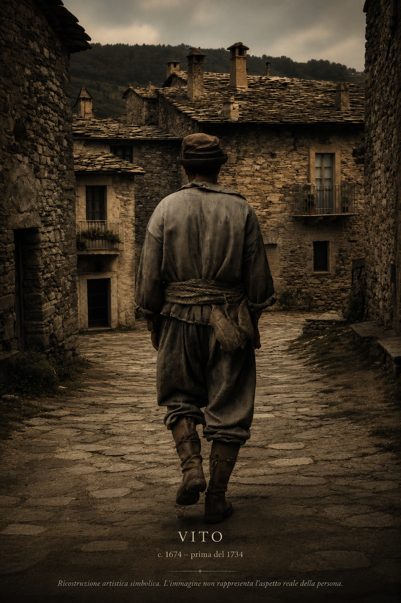

Una linea padre-figlio documentata attraverso oltre tre secoli e mezzo di storia familiare.
Innocenzio
c. 1649 – prima del 1725
Casale San Pietro
IIVito
1674 – prima del 1734
 III
III
Domenico
1717 – 1759
Bracciale · Casale San Pietro IV
IV
Antonio
1753 – 1785
Casale San Pietro
1802 · Trasferimento a Eboli
 V
V
Domenico
1779 – 1822
Bufalaro · Casale San Pietro → Eboli VI
VI
Nicola
1807 – 1857
Calzolaio · Eboli → Casale San Pietro → Eboli VII
VII
Vito
1850 – 1903
Guardia Municipale · Eboli VIII
VIII
Cosimo
1882 – 1958
Guardia Municipale · Eboli IX
IX
Angelo
1922 – 2006
Impiegato Pastificio Pezzullo · Eboli X
X
Nicola
1960 – 2007
Impiegato Pastificio Pezzullo · Eboli